Executive education
Custom Workshops and Programs
Workshops built for one organization's audience, from an energy company to a university's senior staff to a government bureau
Alongside the open-enrollment courses I built shorter sessions for specific audiences. They reuse the same experiential core (a simulation first, then the research) but the cases and examples change for the room. The groups and teams workshop has lasted the longest: it started as a guest lecture for an energy company in 2015 and I ran it again in Doha in 2025 for community partners and for a government bureau.
- 2015 to 2025
- Half-day workshops and short programs, on site or at CMU-Q
- Course number Custom
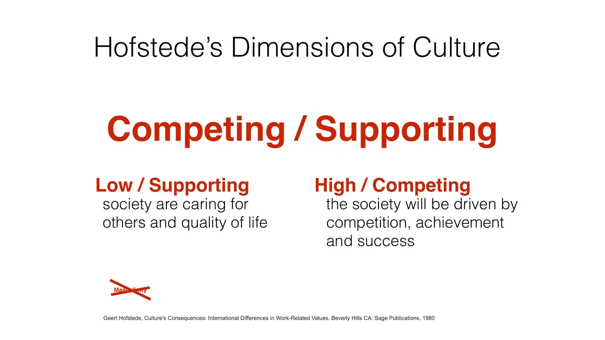
slides from the decks
I taught from
2015 to 2025 · Half-day workshops and short programs, on site or at CMU-Q
Session by session
Scroll the schedule and the slides follow along: five from each session, picked from the decks I taught from.
- S1Creating a culture for innovative teams (guest lecture for RasGas)

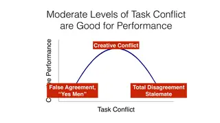
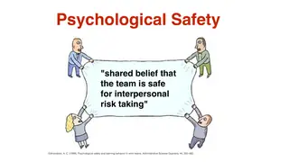
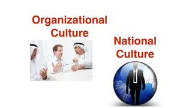
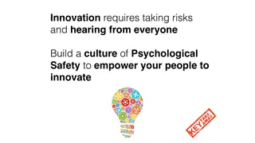
- Senior staff retreat, Munich
- S2Senior leadership workshop: team simulation and team developmentIn-class exerciseMorning session for the campus's senior staff leadership team
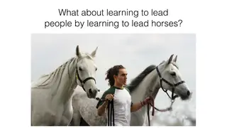


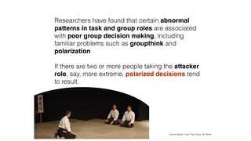
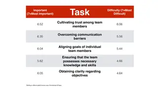
- S3Decisions under uncertainty and psychological safetyIn-class exerciseCarter Racing simulation and debrief
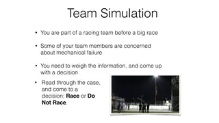
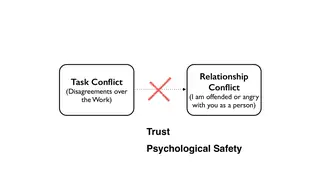

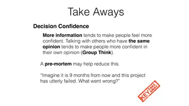
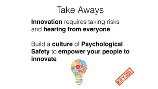
- S4Using statistics to solve business problems: A/B testing and the Cookie Cats caseBusiness Analytics Summer Summit at Tepper, a summer program for students considering the MS in Business Analytics
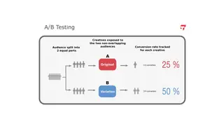
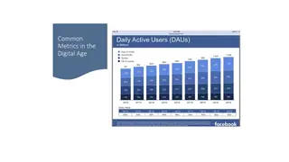
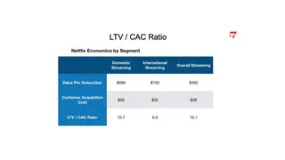

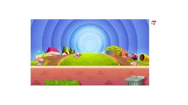
- S5Business Analytics Summer Summit: faculty leadPresentationsI planned the curriculum and coordinated faculty for the May 14 to 21 program, including a student analytics project with an industry partner
- Doha, November 2025
- S6Managing groups and teams: strategies for collaborative excellence (community partner workshop at CMU-Q)Half-day workshop, 8:30 to 12:30, with certificates
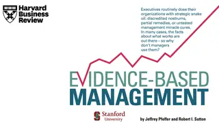
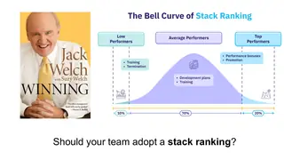
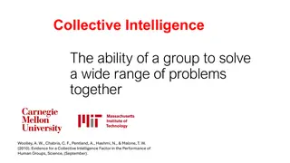
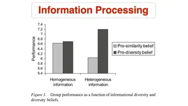

- S6Managing groups and teams workshop for the Civil Service BureauThe same workshop, delivered on site for a government audience
Offerings
When I taught it
- RasGas guest lecture (2015)
- CMU-Q senior staff retreat, Munich (August 2015)
- Business Analytics Summer Summit (2024, 2025)
- CMU-Q community partner workshop (November 2025)
- Civil Service Bureau workshop (November 2025)